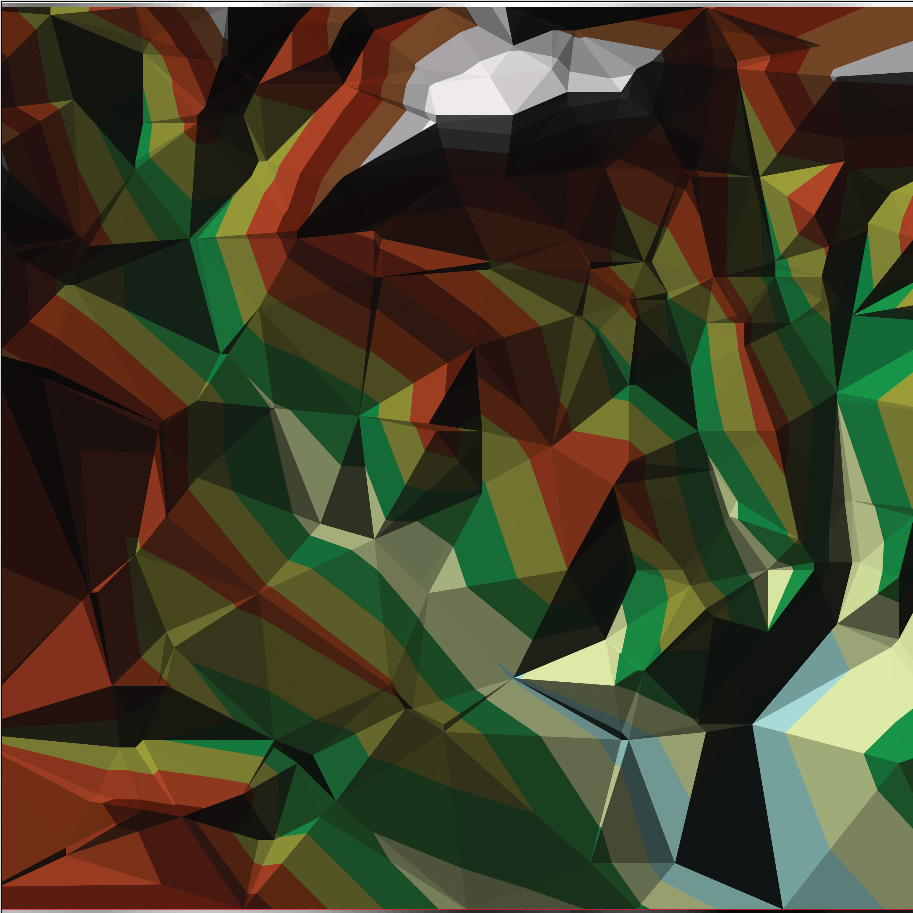
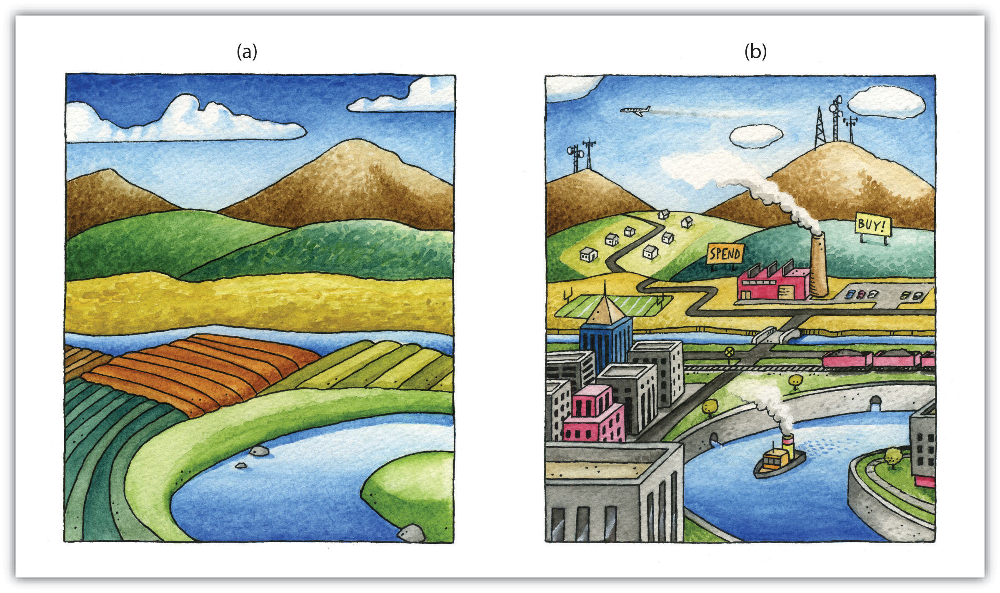

Geospatial data are stored in many different file formats. Each geographic information system (GIS) software package, and each version of these software packages, supports different formats. This is true for both vector and raster data. Although several of the more common file formats are summarized here, many other formats exist for use in various GIS programs.
The most common vector file format is the shapefileA simple, nontopological, vector file format developed by ESRI to store the geometric location and attribute information of geographic features.. Shapefiles, developed by ESRI in the early 1990s for use with the dBASE III database management software package in ArcView 2, are simple, nontopological files developed to store the geometric location and attribute information of geographic features. Shapefiles are incapable of storing null values, as well as annotations or network features. Field names within the attribute table are limited to ten characters, and each shapefile can represent only point, line, or polygon feature sets. Supported data types are limited to floating point, integer, date, and text. Shapefiles are supported by almost all commercial and open-source GIS software.
Despite being called a “shapefile,” this format is actually a compilation of many different files. Table 5.1 "Shapefile File Types" lists and describes the different file formats associated with the shapefile. Among those listed, only the SHP, SHX, and DBF file formats are mandatory to create a functioning shapefile, while all others are conditionally required. As a general rule, the names for each file should conform to the MS-DOS 8.3 convention when using older versions of GIS software packages. According to this convention, the filename prefix can contain up to eight characters, and the filename suffix contains three characters. The more recent GIS software packages have relaxed this requirement and will accept longer filename prefixes.
Table 5.1 Shapefile File Types
| File Extension | Purpose |
|---|---|
| SHP* | Feature geometry |
| SHX* | Index format for the feature geometry |
| DBF* | Feature attribute information in dBASE IV format |
| PRJ | Projection information |
| SBN and SBX | Spatial index of the features |
| FBN and FBX | Read-only spatial index of the features |
| AIN and AIH | Attribute information for active fields in the table |
| IXS | Geocoding index for read-write shapefiles |
| MXS | Geocoding index for read-write shapefiles with ODB format |
| ATX | Attribute index used in ArcGIS 8 and later |
| SHP.XML | Metadata in XML format |
| CPG | Code page specifications for identifying character encoding |
| * Indicates mandatory files | |
The earliest vector format file for use in GIS software packages, which is still in use today, is the ArcInfo coverageA georelational file format developed by ESRI that supports multiple features types (e.g., points, lines, polygons, annotations) while also storing the topological information associated with those features.. This georelational file format supports multiple features types (e.g., points, lines, polygons, annotations) while also storing the topological information associated with those features. Attribute data are stored as multiple files in a separate directory labeled “Info.” Due to its creation in an MS-DOS environment, these files maintain strict naming conventions. File names cannot be longer than thirteen characters, cannot contain spaces, cannot start with a number, and must be completely in lowercase. Coverages cannot be edited in ArcGIS 9.x or later versions of ESRI’s software package.
The US Census Bureau maintains a specific type of shapefile referred to as TIGER or TIGER/Line (Topologically Integrated Geographic Encoding and Referencing system)A vector file format developed by the US Census Bureau including map features such as census tracts, roads, railroads, buildings, rivers, and other features that support and improve the bureau’s ability to collect census information.. Although these open-source files do not contain actual census information, they map features such as census tracts, roads, railroads, buildings, rivers, and other features that support and improve the bureauand improve the Bureau’s ability to#8217;s ability to collect census information. TIGER/Line shapefiles, first released in 1990, are topologically explicit and are linked to the Census Bureau’s Master Address File (MAF), therefore enabling the geocoding of street addresses. These files are free to the public and can be freely downloaded from private vendors that support the format.
The AutoCAD DXF (Drawing Interchange Format or Drawing Exchange Format)A vector file format developed by Autodesk to allow interchange between engineering-based CAD (computer-aided design) software and other mapping software packages. is a proprietary vector file format developed by Autodesk to allow interchange between engineering-based CAD (computer-aided design) software and other mapping software packages. DXF files were originally released in 1982 with the purpose of providing an exact representation of AutoCAD’s native DWG format. Although the DXF is still commonly used, newer versions of AutoCAD have incorporated more complex data types (e.g., regions, dynamic blocks) that are not supported in the DXF format. Therefore, it may be presumed that the DXF format may become less popular in geospatial analysis over time.
Finally, the US Geological Survey (USGS) maintains an open-source vector file format that details physical and cultural features across the United States. These topologically explicit DLGs (Digital Line Graphics)The vector file format developed by the USGS that maintains information on physical and cultural features across the United States. come in large-, intermediate-, and small-scale depending on whether they are derived from 1:24,000-; 1:100,000-; or 1:2,000,000-scale USGS topographic quadrangle maps. The features available in the different DLG types depend on the scale of the DLG but generally include data such as administrative and political boundaries, hydrography, transportation systems, hypsography, and land cover.
Vector data files can also be structured to represent surface elevation information. A TIN (Triangulated Irregular Network)A vector data structure that uses contiguous, nonoverlapping triangles to represent elevation. is an open-source vector data structure that uses contiguous, nonoverlapping triangles to represent geographic surfaces (Figure 5.10 "Triangulated Irregular Network (TIN)"). Whereas the raster depiction of a surface represents elevation as an average value over the spatial extent of the individual pixel (see Section 5.3.2 "Raster File Formats"), the TIN data structure models each vertex of the triangle as an exact elevation value at a specific point on the earth. The arcs between each vertex are an approximation of the elevation between two vertices. These arcs are then aggregated into triangles from which information on elevation, slope, aspect, and surface area can be derived across the entire extent of the model’s space. Note that term “irregular” in the name of the data model refers to the fact that the vertices are typically laid out in a scattered fashion.
Figure 5.10 Triangulated Irregular Network (TIN)
The use of TINs confers certain advantages over raster-based elevation models (see Section 5.3.2 "Raster File Formats"). First, linear topographic features are very accurately represented relative to their raster counterpart. Second, a comparatively small number of data points are needed to represent a surface, so file sizes are typically much smaller. This is particularly true as vertices can be clustered in areas where relief is complex and can be sparse in areas where relief is simple. Third, specific elevation data can be incorporated into the data model in a post hoc fashion via the placement of additional vertices if the original is deemed insufficient or inadequate. Finally, certain spatial statistics can be calculated that cannot be obtained when using a raster-based elevation model, such as flood plain delineation, storage capacity curves for reservoirs, and time-area curves for hydrographs.
A multitude of raster file format types are available for use in GIS. The selection of raster formats has dramatically increased with the widespread availability of imagery from digital cameras, video recorders, satellites, and so forth. Raster imagery is typically 8-bit (256 colors) or 24-bit (16 million colors). Due to ongoing technological advancements, raster image file sizes have been getting larger and larger. To deal with this potential constraint, two types of file compression are commonly used: lossless and lossy. Lossless compressionA method to reduce the file size of an image without decreasing quality. reduces file size without decreasing image quality. Lossy compressionA method to reduce the file size of an image by exploiting limitations of the human eye through removal of information from that cannot be sensed. attempts to exploit limitations of the human eye by removing information from the image that cannot be sensed. As you may guess, lossy compression results in smaller file sizes than lossless compression.
Among the most common raster files used on the web are the JPEG, TIFF, and PNG formats, all of which are open source and can be used with most GIS software packages. The JPEG (Joint Photographic Experts Group)Raster image format that stores 8-bit values for each of the red, blue, and green colors spaces. and TIFF (Tagged Image File Format)Raster image format that stores 16-bit values for each of the red, blue, and green colors spaces. raster formats are most frequently used by digital cameras to store 8-bit values for each of the red, blue, and green colors spaces (and sometimes 16-bit colors, in the case of TIFF images). JPEGs support lossy compression, while TIFFs can be either lossy or lossless. Unlike JPEG, TIFF images can be saved in either RGB or CMYK color spaces. PNG (Portable Network Graphics)Raster image format that stores 24-bit values for each of the red, blue, and green colors spaces. files are 24-bit images that support either lossy or lossless compression. PNG files are designed for efficient viewing in web-based browsers such as Internet Explorer, Mozilla Firefox, Netscape, and Safari.
Native JPEG, TIFF, and PNG files do not have georeferenced information associated with them and therefore cannot be used in any geospatial mapping efforts. In order to employ these files in a GIS, a world fileA plaintext data file that specifies the locations and transformations of a feature dataset. must first be created. A world file is a separate, plaintext data file that specifies the locations and transformations that allow the image to be projected into a standard coordinate system (e.g., Universal Transverse Mercator [UTM] or State Plane). The filename of the world file is based on the name of the raster file, while a w is typically added into to the file extension. The world file extension name for a JPEG is JPW; for a TIFF, it is TFW; and for a PNG, PGW.
An example of a raster file format with explicit georeferencing information is the proprietary MrSID (Multiresolution Seamless Image Database)A raster format developed by LizardTech, Inc., for use with large aerial photographs or satellite images, whereby portions of a compressed image can be viewed quickly without having to decompress the entire file. format. This lossless compression format was developed by LizardTech, Inc., for use with large aerial photographs or satellite images, whereby portions of a compressed image can be viewed quickly without having to decompress the entire file. The MrSID format is frequently used for visualizing orthophotos.
Like MrSID, the proprietary ECW (Enhanced Compression Wavelet)A raster file format developed by Earth Resource Mapping that supports up to 255 layers of image information and includes georeferencing information within the file structure. format also includes georeferencing information within the file structure. This lossy compression format was developed by Earth Resource Mapping and supports up to 255 layers of image information. Due to the potentially huge file sizes associated with an image that supports so many layers, ECW files represent an excellent option for performing rapid analysis on large images while using a relatively small amount of the computer’s RAM (Random Access Memory), thus accelerating computation speed.
Like the open-source, vector-based DLG, DRGs (Digital Raster Graphics)Raster versions of USGS topographic maps that include all of the collar material from the originals. are scanned versions of USGS topographic maps and include all of the collar material from the originals. The geospatial information found within the image’s neatline is georeferenced, specifically to the UTM coordinate system. These graphics are scanned at a minimum of 250 dpi (dots per inch) and therefore have a spatial resolution of approximately 2.4 meters. DRGs contain up to thirteen colors and therefore may look slightly different from the originals. In addition, they include all the collar material from the original print version, are georeferenced to the surface of the earth, fit the Universal Transverse Mercator (UTM) projection, and are most likely based on the NAD27 data points (NAD stands for North American Datum).
Like the TIN vector format, some raster file formats are developed explicitly for modeling elevation. These include the USGS DEM, USGS SDTS, and DTED file formats. The USGS DEM (US Geological Survey Digital Elevation Model)A raster file format developed by the USGS to represent elevation. is a popular file format due to widespread availability, the simplicity of the model, and the extensive software support for the format. Each pixel value in these grid-based DEMs denotes spot elevations on the ground, usually in feet or meters. Care must be taken when using grid-based DEMs due to the enormous volume of data that accompanies these files as the spatial extent covered in the image begins to increase. DEMs are referred to as digital terrain models (DTMs)USGS DEMs that represent a simple, bare-earth model of the globe. when they represent a simple, bare-earth model and as digital surface models (DSMs)USGS DEMs that include the heights of landscape features such as buildings and trees. when they include the heights of landscape features such as buildings and trees (Figure 5.11 "Digital Surface Model (left) and Digital Terrain Model (right)").
Figure 5.11 Digital Surface Model (left) and Digital Terrain Model (right)
USGS DEMs can be classified into one of four levels of quality (labeled 1 to 4) depending on its source data and resolution. This source data can be 1:24,000-; 1:63,360-; or 1:250,000-scale topographic quadrangles. The DEM format is a single file of ASCII text comprised of three data blocks; A, B, and C. The A block contains header information such as data origin, type, and measurement systems. The B block contains contiguous elevation data described as a six-character integer. The C block contains trailer information such as root-mean square (RMS) error of the scene. The USGS DEM format has recently been succeeded by the USGS SDTS (Spatial Data Transfer Standard) DEMA distribution format for transferring USGS DEMs from one computer to another with zero data loss. format. The SDTS formatUSGS. 2010. “What is SDTS?” USGS, http://mcmcweb.er.usgs.gov/sdts/whatsdts.html. was specifically developed as a distribution format for transferring data from one computer to another with zero data loss.
The DTED (Digital Terrain Elevation Data)An elevation specific raster file format developed for military purposes such as line-of-sight analysis, 3-D visualization, and mission planning. format is another elevation specific raster file format. It was developed in the 1970s for military purposes such as line of sight analysis, 3-D visualization, and mission planning. The DTED format maintains three levels of data over five different latitudinal zones. Level 0 data has a resolution of approximately 900 meters; Level 1 data has a resolution of approximately 90 meters; and Level 2 data has a resolution of approximately 30 meters.
A geodatabaseA recently developed, proprietary ESRI file format that supports both vector and raster feature datasets (e.g., points, lines, polygons, annotation, JPEG, TIFF) within a single file. is a recently developed, proprietary ESRI file format that supports both vector and raster feature datasets (e.g., points, lines, polygons, annotation, JPEG, TIFF) within a single file. This format maintains topological relationships and is stored as an MDB file. The geodatabase was developed to be a comprehensive model for representing and modeling geospatial information.
There are three different types of geodatabases. The personal geodatabaseA type of geodatabase developed for single-user editing, whereby two editors cannot work on the same geodatabase at a given time. was developed for single-user editing, whereby two editors cannot work on the same geodatabase at a given time. The personal geodatabase employs the Microsoft Access DBMS file format and maintains a size limit of 2 gigabytes per file, although it has been noted that performance begins to degrade after file size approaches 250 megabytes. The personal geodatabase is currently being phased out by ESRI and is therefore not used for new data creation.
The file geodatabaseA type of geodatabase that allows only single-user editing for unique feature datasets within a geodatabase. similarly allows only single-user editing, but this restriction applies only to unique feature datasets within a geodatabase. The file geodatabase incorporates new tools such as domains (rules applied to attributes), subtypes (groups of objects with a feature class or table), and split/merge policies (rules to control and define the output of split and merge operations). This format stores information as binary files with a size limit of 1 terabyte and has been noted to perform and scale much more efficiently than the personal geodatabase (approximately one-third of the feature geometry storage required by shapefiles and personal geodatabases). File databases are not tied to any specific relational database management system and can be employed on both Windows and UNIX platforms. Finally, file geodatabases can be compressed to read-only formats that further reduce file size without subsequently reducing performance.
The third hybrid ESRI format is the ArcSDE geodatabaseA type of geodatabase developed to allow multiple editors to simultaneously work on feature datasets within a single geodatabase., which allows multiple editors to simultaneously work on feature datasets within a single geodatabase (a.k.a. versioning). Like the file geodatabase, this format can be employed on both Windows and UNIX platforms. File size is limited to 4 gigabytes and its proprietary nature requires an ArcInfo or ArcEditor license for use. The ArcSDE geodatabase is implemented on the SQL Server Express software package, which is a free DBMS platform developed by Microsoft.
In addition to the geodatabase, Adobe Systems Incorporated’s geospatial PDF (Portable Document Format)A nonproprietary file format developed by Adobe Systems, Inc., that allows for the representation of geometric entities such as points, lines, and polygons. is an open-source format that allows for the representation of geometric entities such as points, lines, and polygons. Geospatial PDFs can be used to find and mark coordinate pairs, measure distances, reproject files, and georegister raster images. This format is particularly useful as the PDF is widely accepted to be the preferred standard for printable web documents. Although functionally similar, the geospatial PDF should not be confused with the GeoPDF format developed by TerraGo Technologies. Rather, the GeoPDF is a branded version of the geospatial PDF.
Finally, Google Earth supports a new, open-source, hybrid file format referred to as a KML (Keyhole Markup Language)An open-source hybrid file format developed for Google Earth.. KML files associate points, lines, polygons, images, 3-D models, and so forth, with a longitude and latitude value, as well as other view information such as tilt, heading, altitude, and so forth. KMZ files are commonly encountered, and they are zipped versions KML files.